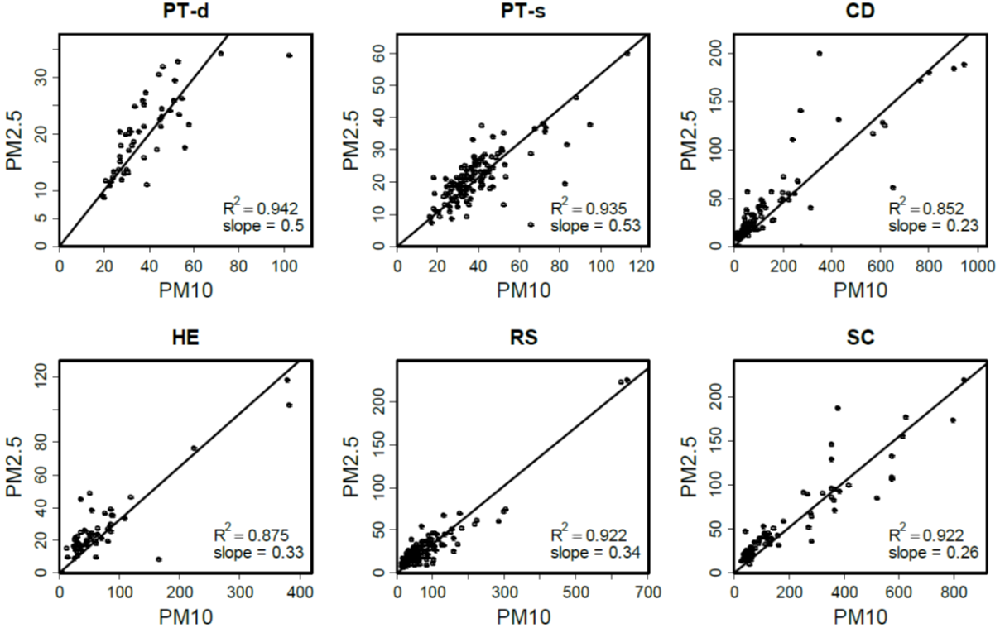

”והארץ מחולקת למחוזות הזיכרון וגלילי התקווה,
ותושביהם מתערבבים אלה עם אלה,
כמו חוזרים מחתונה עם חוזרים מלוויית המת.“אהבת הארץ, יהודה עמיחי
14. סיכום מצב הסביבה בישראל#
ישראל נמצאת במקום ייחודי למדי מבחינת בעיות הסביבה איתן היא מתמודדת. היא המדינה היחידה מבין חברות ה-OECD (מלבד אוסטרליה) שחלקים ניכרים ממנה נמצאים באזור ספר-מדבר. בנוסף, היא אחת המדינות הצפופות ביותר בעולם. בשנת 2021 חיו 433 אנשים בקמ“ר (מקום 35 בעולם) כאשר הצפיפות ברשות הפלסטינית גבוהה הרבה יותר.[1] הייחוד של ישראל הוא בכך שמבין המדינות המפותחות אנחנו אחת משלוש המדינות הצפופות ביותר. בישראל גם מתקיים שילוב ייחודי של רמת חיים גבוהה (צריכת משאבים גבוהה) שעולה בהתמדה ושל ריבוי טבעי גבוה. בשנת 2023 התמ“ג לנפש היה כ-$52,000 (המקום ה-29 בעולם).[2] בשנת 2024 הוערך שהריבוי הטבעי הוא כ-1.58% בשנה, מקום 59 בעולם, כלומר הכפלת מספר התושבים מידי כ-44 שנה.[3] במילים אחרות, בעשורים האחרונים נוספו כמיליון תושבים לישראל מידי שבע שנים. הריבוי הטבעי בישראל הוא הגבוה ביותר מכל מדינות ה-OECD, והוא נובע מערכי TFR של כ-3 ילדים לאשה[4] בהשוואה לערכים נמוכים מ-2 ברוב מדינות ה-OECD.[5] מעבר לכל זה, הפערים הכלכליים בין האחוזונים הגבוהים והנמוכים בישראל הלכו וגדלו עם השנים. ערכו של מדד ג’יני[6] של ישראל היה כ-0.36 בשנים 1992-1979 ועלה ל-0.43-0.38 בשנים 2021-2000.[7]
מקור בעיות הסביבה בישראל#
הנתונים הללו ממחישים שמצבה של ישראל אינו טוב מבחינת המדדים הבסיסיים ביותר לשמירה על הסביבה (שפורטו בפרקי המבוא והסיכום): (1) עצירת הגידול במספר בני האדם (כ-2 ילדים בממוצע לכל אישה לכל היותר), (2) מעבר מכלכלה תלוית-צמיחה המבוססת על צריכת מוצרים, לכלכלה המבוססת על צריכת שירותים (שאיננה צומחת בהיבט של משאבי טבע), במקביל למעבר לכלכלה מעגלית ככל שניתן, (3) הגדלת השוויון הכלכלי והקטנת הפערים בין עשירים לעניים.[8] למרות הנתונים הללו, שאינם מעודדים בלשון המעטה, נעשים בישראל מאמצים רבים לשמור על היבטים רבים של איכות הסביבה. המאמץ לפתור את בעיות הסביבה מונע בחלקו על ידי גופים ממשלתיים ובראשם המשרד להגנת הסביבה,[9] וכן על ידי גופים ללא מטרות רווח הפועלים ברמה לאומית וברמה מקומית.[10] להלן נפרט את הבעיות העומדות בפני ישראל כיום ואת דרכי ההתמודדות בתחומים השונים. בחלקו האחרון של הפרק נציג את המדדים להערכת חומרתן.[11]
הרס קרקעות וחקלאות#
כמו בארצות רבות אחרות, הפעילות החקלאית האינטנסיבית בישראל גורמת נזקים משמעותיים לטבע.[12] החקלאות בישראל כמו במקומות אחרים בעולם נשענת על זמינות ואיכות קרקעות ועל זמינות מים שפירים. על משק המים של ישראל נרחיב בהמשך. בישראל יש מגוון גדול מאד של קרקעות ורובן שייכות למשפחות הקרקעות של שני סוגי אקלים: אקלים ים-תיכוני (לח בחורף יבש בקיץ) ואקלים מדברי. נעשו בישראל מחקרים שעסקו מצד אחד בתהליכי יצירת הקרקע, מקור החומר הבונה את הקרקע והקשר של תכונות הקרקע לשינויי אקלים,[13] ומצד שני נעשו הרבה מחקרים שבחנו את תכונות הקרקע כמצע לחקלאות,[14] כתשתית לבנייה וכמבלע של מזהמים תעשייתיים.[15] לאורך השנים גרמה הפעילות האנושית לנזק לקרקעות ולגופי מים טבעיים. נזקים אלה כוללים: סחיפה מוגברת של קרקעות, המלחה של קרקעות, זיהום קרקעות ומקורות מים עם מדבירים, והגעה של חומרי הזנה (נוטריינטים) לגופי מים והגברת היצרנות הראשונית לרמות לא רצויות (תהליכי אאוטריפיקציה, ראו פרקים 9, 10).
לאחרונה נעשים בישראל מאמצים כדי להתמודד עם הנזקים הסביבתיים של פעילות חקלאית על ידי אימוץ של חקלאות מקיימת ומחדשת.[16] למשל, נעשים ניסיונות לשימוש מושכל במדבירים,[17] מעבר לשיטות עיבוד המנסות למזער נזקים לקרקע (ראו פרקים 2 ו-8), הכנסת טכנולוגיות של חקלאות מדייקת (Precision agriculture),[18] ועוד. שותף מרכזי למאמצים אלה הוא משק המודל של תחנת הניסויים של מכון וולקני למחקר במשרד החקלאות.[19] משק המודל מקדם שיטות עיבוד של חקלאות מקיימת (Sustainable agriculture) שפורטו בפרק 2.[20] במקביל לפעילות של משק המודל ובתאום אתו, גוברת המודעות לנושא החקלאות המקיימת בקרב חקלאים רבים בישראל (למשל, העמותה הישראלית לקידום חקלאות מחדשת ואגרופורסטרי),[21] המשלבים עקרונות של חקלאות מקיימת עם שיטות של חקלאות מדייקת. פרוט מקיף של ההתפתחויות והאתגרים העומדים בפני החקלאות המקיימת בישראל מופיע בדו“ח שהתפרסם בשנת 2023.[22]
אנרגיות מתחדשות וחילופיות#
צריכת האנרגיה הכוללת של מדינת ישראל (חשמל, תחבורה, תעשייה) היא בסדר גודל של כ-35 GW,[23] כאשר רובה המכריע מגיע משריפת דלקים פוסיליים, בראשם גז מתאן המופק ממאגרים הנמצאים בים התיכון לאורך חופי ישראל. הפקת חשמל צורכת כ-30% מכלל האנרגיה כמו ברוב מדינות העולם. בשנת 2022 כ-9% מהחשמל בישראל הופק על ידי אנרגיה סולארית (בהשוואה ל-6% במדינות OECD שרובן נמצאות באזורים פחות מתאימים לייצור אנרגיה סולארית).[24] לעומת זאת תרומת אנרגית הרוח לייצור חשמל בישראל היא פחות מאחוז, בעוד שבמדינות OECD היא כ-10%.[25] אם נכלול מקורות אנרגיה נוספים שאינם פולטים גזי חממה (בעיקר הידרו-אלקטריים שבישראל אינם קיימים וכן אנרגיה גרעינית שאיננה מתחדשת) מצבה של ישראל מבחינת התרומה של מקורות אנרגיה שאינם שורפים דלקים פוסיליים ביחס לשאר מדינות ה-OECD גרוע הרבה יותר (כ-6% בישראל לעומת כ-37% בממוצע של ארצות אירופה).[26] יתרה מזאת, המעבר מפחם ודלק נוזלי לגז מתאן אמנם שיפר את מצב זיהום האוויר בישראל, אולם השיפור המובטח בפליטות גזי חממה מוטל בספק.[27]
ישראל היא מדינה עתירת שמש, ולכן פיתוח אנרגיה סולארית נחשבת לחלופה המועדפת. על מנת לספק חשמל בסדר גודל של כ-20 GW (הצפי לשנת 2030 כאשר ייצור חשמל יצרוך יותר מ-30% מכלל האנרגיה)[28] יידרש בישראל שטח גדול יחסית. בהסתמך על שטף קרינה סולארית ממוצעת של כ-250 W למטר רבוע וביעילות של 8% -15% מקרינת השמש המתורגמת לחשמל, השטח הדרוש הוא כ-1,000 קמ“ר, המהווה כ-4% משטח המדינה. עובדה זאת מחייבת מיצוי הפוטנציאל של דו-שימוש. לפי חישוב של המשרד להגנת הסביבה הישראלי, דו-שימוש (לא כולל התקנה מעל אזורים חקלאיים) יאפשר ייצור חשמל סולארי בכמות העונה על כ-40% מצריכת החשמל הצפויה של ישראל בשנת 2030.[29] החשש מפגיעה בשטחים פתוחים בישראל הוביל ליוזמות של התקנת קולטים סולארים על מתקנים חקלאיים (גגות של רפתות, לולים, מחסנים)[30] על מנת להגדיל את חלקו של דו-שימוש כמקור לאנרגיה סולארית. למרות זאת קיימת עדין הסכנה שמשרד האנרגיה יפנה לפתרון הקל יותר של התקנת שדות של קולטים סולאריים בשטחים פתוחים עם ערך נופי ואקולוגי ניכר.[31]
הפקת חשמל בעזרת רוח בישראל הציפה קונפליקט לא פשוט משום שהמיקום המועדף עבור תחנות רוח בישראל הוא בגליל וברמת הגולן הנמצאים בציר הנדידה העולמי של בעלי כנף בין אירופה לאפריקה.[32] בנוסף ישנם גם שיקולים ביטחוניים לגבי בניית תחנות רוח באזורים אלה. המצב העכשווי העגום של ישראל מבחינת ייצור חשמל סולארי או באמצעות רוח נמצא בניגוד לכך שישראל הייתה חלוצה בשימוש במחממי מים סולארים פאסיביים.[33] המעבר לאנרגיות חילופיות (בעיקר סולארית ורוח) מחייב השקעה בנושא של אגירת אנרגיה. אחת השיטות המבטיחות היא אגירת אנרגיה באמצעות תאי-מימן. לאחרונה עשתה חברה ישראלית (H2PRO) פריצת דרך בתהליך הזה.[34] שיטה אחרת היא העלאת מים למקום גבוה בזמן עודף באנרגיה, והזרמת המים להפקת חשמל בזמן צריכת השיא. מתקן כזה הוקם בגלבוע, אם כי כיום הוא משמש לאיזון צריכת החשמל בין שעות שיא ושפל של הביקוש.[35]
טיפול בפסולת#
אחת הבעיות הסביבתיות הגדולות של המעבר לאנרגיה חילופית, בעיקר רוח וסולארית, היא השימוש המוגבר במתכות למגוון שימושים (פרקים 3, 4). חלק מהמתכות הללו נדירות ביותר וחלקן רעילות, מה שמעלה לקדמת הבמה את נושא המיחזור. בישראל מיחזור מתכות הוא נושא בעייתי למרות שלכאורה הנושא טופל לפני כעשור. החל משנת 2014 קיים בישראל חוק המטפל בנושא הטיפול הסביבתי בציוד חשמלי ואלקטרוני ובסוללות.[36] החוק קובע כי יבואן או יצרן חייב למחזר לפחות מחצית מהמשקל של הציוד האלקטרוני שמכר בשנה, ויצרני או יבואני סוללות חייבים למחזר לפחות שליש מסך המשקל שמכרו. במסגרת החוק הוגדרו מנגנוני איסוף, שינוע וטיפול מותרים שאמורים להתבצע באמצעות תאגידי מיחזור שקיבלו רישיון ממשרד הגנת הסביבה. למרות זאת, נושא הפסולת האלקטרונית בישראל נמצא במצב כאוב ביותר, הכולל היבטים של חוסר צדק חברתי, שיקוף של המצב הפוליטי-בטחוני ופגיעה משמעותית בבריאות הציבור, בעיקר של אוכלוסיות מוחלשות.[37] בשנת 2017 התפרסם דו“ח מקיף על הנושא שבחן את המצב בהסתמך על החוק שהוזכר קודם.[38] מסקנת הדו“ח הייתה שהמפגע הסביבתי-בריאותי של פסולת אלקטרונית בישראל נובע מאי אכיפת החוק, מה שהוביל ליצירת שוק פיראטי לטיפול בפסולת המושתת על ניצול אוכלוסיות מוחלשות בעיקר מעבר לקו הירוק וגורם כאמור למפגעים בריאותיים וסביבתיים. מצב זה חמור במיוחד כיוון שהפסולת האלקטרונית מכילה מצד אחד חומרים רעילים (למשל, ארסן, קדמיום, עופרת, ניקל) ומצד שני חומרים בעלי ערך כלכלי (למשל, זהב, כסף, פלדיום, פלטינום, נחושת, ברזל) המעודדים ניסיונות הפקה פירטיים תוך שריפה לא מבוקרת של כבלי תקשורת, מכשירי חשמל ביתיים וחלקי מכוניות הגורמת לשחרור מזהמים ובכללם דיאוקסין (Dioxin)[39] לאוויר. במילים אחרות, הפתרון לבעיית הפסולת האלקטרונית בישראל הוא באמצעות אכיפה קפדנית של אחריות היצרן/ספק כפי שמופיע בחוק משנת 2014.
מיחזור פסולת עירונית נמצא גם הוא במצב קשה למרות מאמץ שנמשך כמה עשורים לשפר את המצב,[40] ולמרות קידום החקיקה בנושא: חוק שמירת הניקיון (תשמ“ד-1984), חוק איסוף ופינוי פסולת למיחזור (תשנ“ג-1993), וכן חוקים המתייחסים לחומרים מסוימים.[41] בשנת 2022, כ-75% מהפסולת הביתית בישראל הוטמנה בקרקע בזמן שעתודות הקרקע להטמנה הולכות ומתמעטות (וייגמרו בשנים הקרובות).[42] בשנים האחרונות הוקמו בישראל ארבעה מרכזים למיון פסולת, אולם צוואר הבקבוק הוא במציאת שימושים מועילים ומשתלמים כלכלית לפסולת הממוינת, כך שרק הפסולת שלא נמצא לה שימוש תועבר להטמנה.[43] בהקשר זה ראוי לציין את חברת UBQ הישראלית המציעה פתרונות מהפכניים להפיכת פסולת ביתית לחומר גלם מועיל.[44]
לעומת פסולת ביתית, אחוז המיחזור של פסולת תעשייתית בישראל גבוה יותר.[45] רוב הפסולת למיחזור בתעשייה מגיעה מהפרדה של פסולת במקור בשל ערכה הכלכלי הגבוה. אולם, הן בפסולת התעשייתית והן בפסולת הביתית אחוז הפלסטיק הממוחזר נמוך יחסית. ככל הנראה פחות מ-10% ממיליון טון מוצרי הפלסטיק המיוצרים בישראל מידי שנה עוברים מיחזור, אם כי מקור הנתונים על היקף מיחזור הפלסטיק אינו ברור.[46] צעד שיש לעשות במסגרת שיפור אחוז הפלסטיק הממוחזר הוא להכיל את חוק הפיקדון על כל הסוגים של מכלי המשקה. בישראל (ובעולם) גם נעשים מאמצים לפתח סוגי פלסטיק מתכלה[47] ובעתיד ניתן יהיה לבחון האם תועלתם עולה על נזקם. פסולת הבניה מהווה גם היא מטרד סביבתי חמור. לב הבעיה נעוץ בכך שחלק ניכר מפסולת הבניה מפונה לאתרים לא מורשים ואין אכיפת חוק מספיקה.[48] במקביל, מתקני טיפול ומיחזור מאושרים של פסולת בנין הולכים ומתמעטים בעיקר משום שאינם מצליחים לחדש את היתרי ההפעלה שלהם מהרשויות המקומיות בהן הם ממוקמים.
בסך הכל, כמות הפסולת הנאספת ברשויות המקומיות בישראל גדלה מידי שנה בגלל העלייה ברמת החיים וגידול האוכלוסייה, ולמרות העלייה באחוז המיחזור, כמות הפסולת המוטמנת ממשיכה לעלות והבעיה הולכת ומחריפה.[49] בנוסף, קיים קשר בין אוכלוסיות מוחלשות ומיקום אתרים לפינוי פסולת, נושא המוצג בצורה נוקבת בספר שפורסם לאחרונה.[50] כדי לעשות שימוש חוזר מיטבי בפסולת בישראל יש לנקוט במספר צעדים,[51] כשהראשון והעיקרי מביניהם הוא הפחתה מירבית של אחוז הפסולת המוטמנת. לאחר שנים של התלבטות, יש כיום הסכמה שהפרדת פסולת במקור (על ידי האזרח או המפעל) תורמת רבות לסיכויי ההצלחה של הפחתת כמות הפסולת המוטמנת. רבים טוענים שכדי לאכוף את ההפרדה יש לייצר מצב שהמזהם הוא המשלם. כלומר, מי שאינו מפריד פסולת במקור (אצלו) צריך לשלם מחיר ריאלי על פינוי הפסולת. במקביל, על מנת להוזיל עלויות, משתלם לממשלה לאגד מספר ישובים בנושא פינוי הפסולת ולחייב תשלום ריאלי על פינוי פסולת שאיננה מופרדת על ידי האזרח. משנת 2015 החל לפעול מפעל להפרדת פסולת באזור התעשיה עטרות בירושלים (מתקן הגרין נט), ולאחר כ-10 שנות פעילות נראה שהוא עולה על דרך המלך, ואף משמש מודל חיקוי לערים נוספות. זאת למרות שהוא פועל בתנאים של הפרדת פסולת חלקית.[52]
פתרון נוסף אותו מקדמים לאחרונה בישראל, הוא שריפת פסולת והפקת אנרגיה (השבת אנרגיה).[53] בעוד שלגבי פלסטיק יש נטייה ברורה לעבור לפתרון של השבת אנרגיה (במקביל להפחתת שימוש והגברת מיחזור), רבים מתנגדים לשריפת פסולת ביתית בשל מחירה הגבוה של ההתמרה ובשל מאפייני הפסולת בישראל, המכילה כמות גדולה יחסית של נוזלים מה שמפחית מיעילותה האנרגטית. כמו כן, בישראל יש אחוז לא מבוטל של פסולת בניין שרובה הגדול אינו ניתן לשריפה. למרות כל ההסתייגויות, יש הטוענים שזוהי החלופה היעילה ביותר מבחינה כלכלית וסביבתית בהשוואה להטמנה, והיא מאפשרת הפקה של אנרגיה מפסולת. בכל מקרה, השבת אנרגיה פולטת פד“ח, ובנוסף היא מחייבת טיפול בפליטות מזהמים לאטמוספרה, בעיקר חלקיקים מרחפים, חומרים אורגנים נדיפים (VOC), תחמוצות חנקן, גופרית וכלור, דבר שמייקר את התהליך. ב-2020 גיבש המשרד להגנת הסביבה אסטרטגיה חדשה לטיפול בפסולת, שמטרתה לעבור מ-80% הטמנה ל-20% הטמנה בשנת 2030 תוך מעבר לכלכלה מעגלית בישראל.[54] ימים יגידו האם אכן חל שיפור.
משאבי מים וזיהום מקורות מים#
העבר והסכנות שבפתח#
התחום היחיד מבחינת ההתמודדות עם בעיות סביבה בו נמצאת ישראל במצב טוב יחסית, הוא ניהול משאבי המים לצרכי האדם.[55] לעומת זאת ניהול משאבי המים כחלק ממערכות אקולוגיות עדין טעון שיפור וכן ישנה עדין בעיה של זיהום מקורות מים, ראו בהמשך. מצבו הטוב של משק המים בישראל נשמר למרות קצב הריבוי הגבוה, עליה ברמת החיים, שנות בצורת ואיבוד מי גשמים עקב עליה בתכיפות שיטפונות, והוא טוב לאין שיעור ממצבן של מדינות אחרות במזרח התיכון, כמו מצרים, ירדן, לבנון ואירן.[56] בישראל מושקעים מאמצים רבים להפחית איבוד מים ממערכת ההובלה (כ-5%),[57] יש שימוש חוזר במי קולחים (כ-85% מהשפכים העירוניים עוברים טיפול, בעיקר ראשוני ושניוני, ומופנים להשקיית שדות)[58] וישראל היא אחת המובילות בעולם בכמות המים המותפלים (ראו המשך הפרק וכן פרק 9).[59] פרוט נוסף נמצא בספרו של חיים גבירצמן.[60]
לאורך השנים ישראל הובילה מספר מיזמים שמטרתם היתה להגדיל את כמות המים השפירים הזמינה. זה התחיל עם קידוחי בארות מים בשנות השלושים והארבעים של המאה הקודמת אשר סיפקו את צרכי האוכלוסייה היהודית ועמדו בניגוד משווע למצוקת המים של הישובים הערביים; דרך מוביל המים הארצי שהוביל מים מהכנרת לדרום הארץ; דרך ניצול מי המעיינות הגדולים של אגן ירקון תנינים; דרך החדרת מי שטפונות לאקוויפר מישור החוף; וכלה במפעל ההתפלה, עליו נרחיב בהמשך. לעומת זאת, זיהום מים שפירים עדיין מהווה בעיה סביבתית איתה ישראל צריכה להתמודד.
בישראל, כמו בארצות אחרות, הסכנה העיקרית לאיכות המים היא המלחה, נוכחות מזהמים מוכרים (למשל חנקות) ומזהמים חדשים (Emerging contaminants) הכוללים תרופות, פרכלורטים (perchlorates),[61] מוצרי טיפוח אישי (soaps, cosmetics, fragrances, etc.- PCPs), תרכובות משבשות הורמונים (endocrine disrupting compounds - EDCs), ננו-חלקיקים, PFAS (ראו פרק 4) ועוד.[62] בגלל הסכנה הגדולה הנשקפת מהם, ארחיב את הדיון בנושא ה-PFAS (בעיקר, PFOS, PFOA).[63] בישראל אימצו את התקנים הקנדיים עבור PFAS. עד כה נעשו שני סקרים של PFAS במי בארות בישראל בשנים 2020 ו-2023. הסקר של רשות המים שבוצע בישראל בשנת 2023 מצא ריכוזים מדידים של PFAS ב-13% מ-322 האתרים שנדגמו, ובשלושה אתרים הריכוזים היו מעל 100 ננו-גרם לליטר והקידוחים נסגרו.[64] בשנת 2022 התפרסם דו“ח מקיף של המשרד להגנת הסביבה, משרד הבריאות ורשות המים שהציג תמונת מצב של תרכובות PFAS במים, בקרקעות ובני אדם בישראל.[65] נמצאו ריכוזים של ארבעה סוגי PFAS (PFOA, PFHxS, L-PFOS, PFNA) גם בבני אדם. בכל הנבדקים היו ריכוזים של מאות עד אלפי ננו-גרם לליטר (ppt)[66] של התרכובות שנמדדו. לכאורה מאות או אלפי ppt נחשבים לריכוז נמוך, אולם לא כאשר מדובר בחומרים שריכוזי הרקע שלהם בסביבה טבעית הם אפס (ראו פרק 4). עתירה של עמותת »אדם טבע ודין« בנושא זה משנת 2023 דרשה בין היתר לקבוע תקנות בישראל להגבלת PFAS או להורדת הריכוז המותר שלו, זאת מכוח אמנת שטוקהולם.[67] אכן בשנת 2024 פרסם המשרד להגנת הסביבה טיוטה להערות הציבור של מדיניות אסדרה לחומרים אלה בתעשייה.[68] זיהום מים בישראל איננו מוגבל כמובן לתרכובות PFAS, והסכנה של מזהמים חדשים אחרים אינה פחותה. ישנן עדויות שהן מי שטח (נחלים ואגם הכינרת) והן מי תהום בישראל סובלים מחדירת מזהמים שונים. לאור זאת קיים מערך ניטור ארצי העוקב אחר איכות המים במאגרים השונים.[69] אולם, הבעיה העיקרית היא עם אותם מזהמים שעבורם לא נקבעו תקנים מחייבים או ששיטות הניטור שלהם אינן קיימות עדין או שהן מופעלות בצורה חלקית. דוגמא בולטת למאגר מים מרכזי בישראל הנמצא תחת איום מתמיד ממגוון מקורות זיהום היא אקוות מישור החוף.
אקוות מישור החוף – גוף מים תחת מגוון איומים ואקוות ההר – גוף מים במחלוקת#
אקוות מישור החוף היא מאגר מי תהום קטן בקנה מידה עולמי, אולם משמעותי ביותר ביחס לצרכי המים במדינת ישראל. זאת אקווה חופשית (phreatic) ברובה הנמצאת בקשר עם האטמוספרה דרך החללים בתווך הבלתי רווי הנמצא מעליה. האקווה רדודה ומפלס מי התהום נע בין מטרים בודדים לכמה עשרות מטר מתחת לפני השטח, והיא נמצאת סמוך לחוף הים. היא משתרעת על שטח של כ-1,850 קמ“ר, אורכה כ-120 ק“מ, רוחבה נע בין שבעה ל-20 ק“מ, ועובייה נע בין מטרים ספורים לכ-200 מטר. מי האקווה נמצאים בחללים שבין הגרגרים הבונים את החולות, סלעי כורכר ואבני חול של מישור החוף ששקעו באזור במאות אלפי השנים האחרונות. בתחתית האקווה מצויה יחידת סלעים אטומה מבחינה הולכה הידראולית (אקוויקלוד,aquiclude ) המכילה מים שכמעט אינם זורמים והיא מורכבת מסדימנטים וסלעים עשירי חרסיות ששקעו במישור החוף במהלך תקופת הנאוגן.[70] דיון מקיף במאפייני האקווה מופיע בספרו של גבירצמן,[71] אולם אנחנו נדגיש מספר נקודות הרלוונטיות לדיון הנוכחי.
האקווה מוקפת במאגרי מים מלוחים הנמצאים ממערבה (הים התיכון ומי התהום הנמצאים מתחתיו), מתחתיה (אקוות מים מליחים פוסילית - שאינה מתחדשת) וממזרחה (אקוות מים מליחים נוספת). בנוסף, היא רגישה ביותר לפעילות אנושית כי מעליה נמצא אזור מאוכלס בצפיפות רבה הכולל ישובים רבים, שדות חקלאיים, מרכזי תעשייה ורשת כבישים צפופה. כל אלה מהווים מקורות לזיהום המחלחל אל מי האקווה. האקווה מכילה כ-20 ק“מ מעוקב של מים, וקצב המילוי החוזר השנתי שלה הוא כ-0.3 ק“מ מעוקב (בעיקר ממי גשם), כלומר זמן השהות של מים באקווה הוא כ-60 שנה (20/0.3 – ראו מושגי מפתח בפרק המבוא). המשמעות היא, שאם מי האקווה מזדהמים, יעברו עשרות שנים בטרם הזיהום יסולק בצורה טבעית. החל משנות החמישים של המאה שעברה החלו המים באקווה לסבול מתנופת הפיתוח העירוני והחקלאי במישור החוף. הדבר התבטא בעלייה במליחות המים ובחדירה משמעותית של חנקות ומזהמים אחרים.
המלחים שחדרו וחודרים לאקווה מגיעים הן ממעל ומתחת והן ממערב וממזרח. תשטיפים עירוניים ותעשייתיים וכן מי השקיית שדות שהיו מלוחים יחסית למי האקווה חלחלו מלמעלה. במשך עשרות שנים מי השקיה הכילו כ-200 חלקים למיליון כלוריד,[72] לעומת 50 חלקים למיליון במי האקווה בראשית שנות ה-50 של המאה ה-20, בראשית תקופת הפיתוח. במקביל, עקב שאיבה מוגברת של מי תהום, חדרו מי ים מלוחים ממערב ומן האקוות המליחות מתחת וממזרח. המלחה של אקוות חוף על ידי חדירת מי ים עקב שאיבת יתר היא תופעה נפוצה ומתועדת באזורים רבים בעולם. היא מתרחשת בכל מקום בו אזור החוף מיושב בצפיפות והביקוש למים גדול מההיצע. המנגנון הפיזיקלי של תהליך ההמלחה מפורט בפרק השמיני בספרו של גבירצמן, בו הוא ממחיש מדוע חדירת מי ים מלוחים אל אקוות החוף רגישה כל כך להורדת מפלס מי תהום עקב שאיבת יתר. בנוסף, הבעיה הגדולה היא שחדירת מי ים מלוחים לאקווה היא תהליך מהיר הרבה יותר מהתהליך ההפוך של דחיקת מי ים מן האקווה כאשר רוצים לשקם את האקווה. זאת בגלל שחדירת מי ים מגדילה את המוליכות ההידראולית של סלעי האקווה, ואילו חדירת מים מתוקים המנסים לדחוק את מי הים, מקטינה את המוליכות ההידראולית (דוגמא לזרימה ראקטיבית). במקרה של אקוות החוף, האחראים לתופעה זאת הם חלקיקי חרסיות הנמצאים בחללים של סלעי האקווה. כאשר חודרים מי ים, החלקיקים נצמדים אחד לשני ואינם מפריעים למעבר מים בין החללים, אולם כאשר חודרים מים מתוקים, חלקיקי החרסית מתפזרים ואוטמים את המעבר בין חללי הסלע.[73]
במשך שנים שערו חוקרי האקווה כי דשן עשיר בחנקן (N), בעיקר אמוניה או אוריאה, שנשטף עם מי גשם ומי השקיה אל אופק מי התהום, הוא שגרם לעליה ניכרת בריכוז חנקות (\(NO_{3}^{-}\)) במים, עד לרמות הגבוהות משמעותית מהתקן למי שתייה המקובל בעולם המערבי (45 מיליגרם חנקה בליטר, אשר לא אומץ במדינת ישראל). אולם, מחקרם של רונן ושותפיו הראה שהחנקות הגיעו למי התהום בעיקר כתוצאה מחמצון חומר אורגני (המכיל כ-3-6% חנקן) בקרקעות שמעל האקווה.[74] חמצון חומר אורגני התרחש בראשית המאה העשרים בעקבות ההתיישבות החקלאית הישראלית במישור החוף שאימצה שיטות עיבוד ”מודרניות“ כגון חריש עמוק וניקוז שטחי ביצות. קצב החדירה של מים ומומסים אל האקווה הוא איטי (כשלושים שנה דרושות לחדירה של כ-30 מטר) ולכן, שחרור חנקן מהקרקע התרחש בעיקר בשנות ה-30 וה-40 של המאה הקודמת, אבל גרם לעליית ריכוזי חנקות במי האקווה כשלושה עשורים מאוחר יותר.
כפי שכתוב בפרק 9, האיום החמור ביותר על איכות מי אקוות החוף כיום מגיע ממזהמים שמקורם בפעילות תעשייתית, תחבורתית, עירונית וכן משימוש במדבירים בחקלאות.[75] זאת דוגמא לבעיה עולמית של זיהום מקורות מים (מי תהום ומי שטח) הנמצאים בסמיכות למרכזי אוכלוסייה. במקרה של אקוות החוף תועדו אירועים רבים של דליפת דלק מתחנות דלק ומשדות תעופה, דליפה של כימיקלים ממפעלי תעשייה: פרכלורט - perchlorate , בנזן - benzene, טולואן - toluene , כרום (בעיקר CrO42-), כספית (Hg) וכן זיהום מי תהום על ידי תרופות והורמונים שמקורם במים מושבים ששימשו להשקיה.[76] סוגים רבים של מזהמים הם רעילים גם בריכוזים נמוכים של מיקרו-גרם בליטר, וחלקם גם חשודים כגורמי-סרטן. בנוסף לכל החומרים שצוינו למעלה, יש כאמור מדידות ראשוניות המצביעות על נוכחות של תרכובות PFAS במי אקוות החוף כאשר בחלק מהבארות שנדגמו היו ריכוזים גבוהים מהערך (הגבוה מאד) שאומץ באופן זמני על ידי המשרד להגנת הסביבה.
במהלך השנים נעשו ניסיונות לשקם את אקוות החוף על ידי הקטנת שאיבות והחדרת מים שפירים להפחתת חדירה של מים מלוחים, וכן הגבלת השימוש במי קולחין רק לשדות שאינם ממוקמים מעל אזורי מילוי של האקווה. נעשה גם שימוש גובר במים מותפלים ומותפלים-מושבים המכילים יחסית מעט מלחים. לאור מה שנכתב לעיל על הסכנה הבריאותית של מזהמי המים שנמצאו באקווה והצפי שימשיכו לחלחל במשך זמן רב, נראה שהפתרון הנכון ביותר מבחינת בריאות הציבור הוא להעביר את מי האקווה בבארות שנמצאו מזוהמות דרך ממברנות של אוסמוזה הפוכה (להתפיל את מי האקווה), ורק אז להשתמש בהם (פירוט בנושא התפלה ראו בהמשך הפרק ובפרק 9).
בעוד שאקוות מישור החוף היא המזוהמת ביותר, אקוות ההר, שמצבה טוב יותר מבחינת זיהום, נמצאת תחת לחץ הולך וגובר עקב הקונפליקט על זכויות מים בין ישראל והרשות הפלסטינית. זאת מכיוון שאזור המילוי שלה נמצא בשומרון, בתחומי הרשות הפלסטינית ואילו אזור הנביעה שלה נמצא בשולי מישור החוף, בתחומי ישראל. הנושא נמצא בדיונים כבר שנים רבות, אולם הוא עדין רחוק מפתרון. בשנת 2012 התפרסם דו“ח המציג את העמדה הישראלית של הקונפליקט.[77] אינני מודע לקיומו של מסמך מקביל המציג את העמדה הפלסטינית. מטבע הדברים, המסמך הישראלי מדגיש את זווית הראיה הישראלית. כמו כן, לאחרונה נחתם הסכם אספקת מים בין ישראל לירדן, לפיו ישראל תספק לירדן 25% מצריכת המים הירדנית, וירדן תספק לישראל כ–8% מהחשמל המתחדש של ישראל.[78]
התפלת מים בישראל#
בעשורים האחרונים החלו להתפיל (Desalination) מי ים בישראל, אולם לא מים מליחים בתור הפתרון המועדף להתמודדות עם מחסור במים שפירים. זאת למרות שהתפלת מי ים היא תהליך עתיר אנרגיה הגורם לפליטת פד“ח, לפחות באופן בו הוא נעשה בישראל. על נושא ההתפלה והבעיות הכרוכות בו הרחבנו בפרק 9. ישראל היא אחת המובילות בעולם בכמות המים המותפלים.[79] ראוי לציין ששורק 1 ושורק 2 הם שני מתקני ההתפלה הגדולים בעולם. בישראל מתפילים כ-700 מיליון מ“ק בשנה,[80] כמות המהווה כ-70% מתצרוכת המים הביתית בישראל.[81] הכוונה היא להגדיל את התפוקה בעוד כ-300 מיליון מ“ק בשנים הקרובות. בישראל כמו במדינות אחרות יש בעיה שבמים מותפלים קיים מחסור במגנזיום שהוא נוטריינט חשוב ושמי שתייה הם מקור ההספקה העיקרי שלו לבני אדם. בישראל מתכוונים להתמודד עם בעיית המחסור במגנזיום באמצעות ערבוב עם מים ממקורות אחרים או על ידי הוספה מגנזיום[82] אם כי כיום הבעיה עדין לא נפתרה.[83] כמו כן, התפלת מי ים כרוכה בשחרור תמלחת המרוכזת פי שתיים בערך ממי ים בחזרה אל הסביבה הימית. עם התמלחת משתחררים גם כימיקלים המשתתפים בשלבים המקדימים של תהליך ההתפלה, בעיקר חומרים לסילוק חלקיקים - קואגולנטים,[84] חומרים לטיפול במסננים, ועוד. לחומרים הללו עלולה להיות השפעה מזיקה על היצורים החיים בקרבת המוצא של רכז מתקני ההתפלה. יש גם חשש לנזק באזור השאיבה של מי ים עבור מתקני ההתפלה. חקר ההשלכות הסביבתיות של התפלת מי ים נמצא בחיתוליו גם בישראל.[85]
נחלים ואגמים#
כל נחלי ישראל נמצאים תחת עקה סביבתית חמורה הנובעת מהטיית מרבית המים המזינים אותם ומהגעת מזהמים בתשטיפי שדות ואזורי תעשייה, מגורים ומסחר. שיקום נחלים בישראל החל בשנת 1989 עם הקמת רשות נחל הירקון על ידי משרד החקלאות, משרד הפנים והשירות לשמירת איכות הסביבה. לאחר מספר שנים בהן תהליך השיקום נוהל על ידי גופים שונים, עברה האחריות על השיקום לידי המשרד להגנת הסביבה. במסגרת זאת, הוכנו תוכניות אב לשיקום כל הנחלים העיקריים בארץ והוקמו שתי מנהלות נחלים – נחל חרוד ונחל אלכסנדר. לאחרונה הוקם גוף הנקרא ”אגמא“[86] המהווה ”מרכז ידע לאגני היקוות ונחלים“. המרכז הוקם במטרה ”ליצור קהילה מקצועית לומדת שמאגדת את כלל הגורמים הפעילים במרחבי אגני ההיקוות והנחלים בישראל“.
שיקום נחלי ישראל אמור לכלול התייחסות לכלל אגן ההיקוות, להסדרת הזרימות ותנועת חומר מרחף במים גם בעתות של שיטפונות וגם בתקופת בצורת, להפחתת הזיהום ולהתייחסות מקיפה לחי ולצומח באגן ההיקוות. בעקבות המאמצים שהושקעו בנושא חל שיפור ניכר בחלק מהנחלים, כגון ירקון,[87] קישון, שורק, אלכסנדר, חדרה, אם כי הדרך עדין ארוכה.[88] למשל, הופחתו במידה חלקית כמויות המזהמים המוזרמים לנחלים הראשיים. עם זאת, אין מספיק מחקר שמלווה את הניקוי והאסדרה בגופי המים האלו, שבחלקם קיים מגוון ביולוגי עשיר המשתנה עונתית בהתאם לעושר היחסי במים בעונת החורף והתמעטות המים בקיץ (נחלי איתן). המחסור במחקר חריף עוד יותר בנחלי אכזב הייחודיים מבחינה אקולוגית, בהם זורמים המים בחורף והם מתייבשים בקיץ.[89] בשל אי הבנת הייחודיות של נחלי אכזב והמגוון הביולוגי שלהם, חלק ממאמצי השיקום שנעשו עד כה לא היו מותאמים למאפייני הנחל, והם אף גרמו נזק למערכת הביולוגית בנחל. לאחרונה פורסמה טיוטה של תוכנית להמשך תהליכי השיקום של נחלי ישראל,[90] ונותר לראות כיצד היא תיושם.
בישראל יש שני אגמים עיקריים – ים המלח והכנרת (וכן אגמון החולה). הן בכנרת[91] והן בים המלח[92] נערכו מחקרים רבים שהתבססו על ניתוח תכונות הסדימנטים ששקעו בקרקעיתם. בהסתמך על תכונות הסדימנט ומציאת קווי חוף קדומים שוחזר מאזן המים באגן ההיקוות שהתבטא בעליות וירידות מפלס דרמטיות בעיקר בים המלח (מהיותו אגם טרמינלי).[93] במקביל, נצפו בעשורים האחרונים שינויים משמעותיים בשני האגמים, שינויים שרובם קשורים לפעילות פיתוח והטיית מים לצרכי השקיה או הפקת מלחים. ים המלח שמליחותו כיום היא בערך פי 10 ממי ים,[94] עובר בעשורים האחרונים ירידת מפלס דרמטית, יותר ממטר בשנה, בעיקר בגלל הטיית מי הירדן והירמוך על ידי ישראל וממלכת ירדן ועקב שאיבת מים לבריכות האידוי של מפעלי ים המלח הישראלים והירדנים והרבה פחות עקב שינויי אקלים. ים המלח הוא מקור חשוב ביותר להפקת אשלגן, ברום ומגנזיום, ומפעלי ים המלח הישראלים והירדנים פועלים באזור כבר עשרות שנים. פעילותם מחישה את קצב נסיגת המפלס של האגם. כשליש מהירידה השנתית הממוצעת מיוחסת לפעילות המפעלים, והיא גורמת לנזקים סביבתיים נוספים. בין הנזקים חשוב לציין הצטברות של כמויות גדולות מאד של חומר טפל, בעיקר מלח בישול (NaCl), עליית המפלס באזור בריכות האידוי המסכנת את מלונות ים המלח וכן זיהום אוויר מהמפעלים ומתחנת הכוח המזינה אותם. בישראל קיימת תרעומת גדולה על העובדה שמפעלי ים המלח שולטים בכ-3% משטח מדינת ישראל ופועלים בשטח נרחב כמעט ללא מגבלות מה שגרם לאורך השנים לנזק נרחב באזור שסביב ים המלח.[95]
בעקבות ירידת המפלס חלים שינויים דרמטיים באזורי החוף של האגם: (1) היווצרות בולענים[96] בעיקר בצידו המערבי של ים המלח בין אבנת בצפון ונווה זוהר בדרום;[97] (2) התחתרות נחלים עד לסיכון כביש ים המלח (כביש 90) והרס תשתיות; (3) ירידת מפלס מי תהום בחלק המערבי של ים המלח שעלולה לגרום להתייבשות שמורת עיינות צוקים (עין פשחה). לאחרונה התפרסמו מספר דוחות של המכון הגיאולוגי של ישראל המציעים לשנות את התפישה שרואה בים המלח אזור אסון, ולנסות להפיק את המרב מהמצב העגום הנוכחי.[98] הנחת הבסיס היא שבכל תרחיש סביר מפלס ים המלח ימשיך לרדת ב-20 השנים הבאות לפחות, ולכן יש לפעול להקמת תשתית להנגשה של חופי ים המלח לציבור במצב הנתון.[99] הצפי הוא שירידת המפלס תמשך עד הגעה לשווי משקל חדש בין אידוי ההולך ופוחת ככל שהמים נעשים מלוחים יותר, ובין הספקת מי הירדן ומי שטפונות לאגם. לדעת מרבית החוקרים, ים המלח אינו צפוי להתייבש לחלוטין והוא יתייצב על מפלס של בערך מינוס 500 מטר.[100] כמו כן, ישנן תוכניות להקים תעלה (מובל השלום red-dead canal) שתעביר מים ממפרץ אילת לים המלח כשמטרתה להפיק אנרגיה עבור הספקת מים מותפלים לממלכת ירדן ותסייע במניעה של ירידת המפלס.[101] לצד זאת, קיים חשש גדול שהזרמת מי ים לים המלח תיצור מספר תהליכים הרסניים בים המלח ויתכן שתפגע גם במפרץ אילת ובערבה.[102]
הכנרת היא אגם המים המתוקים היחיד בישראל, ומאז 1964 היא משמשת בפועל כמאגר מים ומקור משמעותי של מים לישראל, ומאז שנת 1994 גם לממלכת ירדן (באמצעות הסכמי השלום בין המדינות). בכנרת פועלת מעבדת מחקר העוקבת אחר שינויים במצב האגם, מנסה לאתר מגמות של שינוי בהרכב הפלנקטון (plankton)[103] והדגים וכן שינויים בהרכב הכימי של מי האגם.[104] במהלך העשורים האחרונים התפרסמו מחקרים רבים שנסמכו על נתוני המעבדה לחקר הכנרת ותעדו שינויים רבים בהתנהגות האגם בעקבות הלחצים שמופעלים עליו (שאיבת מים, דייג, הזרמת שפכים חקלאיים ועירוניים, ועוד). כך למשל, הפחתת שטף החנקן המגיע לכנרת מאגן ההיקוות שלה, ללא טיפול מקביל בזרחן המגיע בעיקר משפכים חקלאים, גרר שינוי בסוג האצות והשתלטות של ציאנו-בקטריות (cyanobacteria) היכולות לקבע חנקן מן האטמוספרה ולהתרבות וליצור מחסור בזרחן עבור אצות אחרות. במקביל הן מפרישות רעלנים הפוגעים באיכות המים.[105] כפי שנכתב בפרק 9, תופעה זאת מתועדת גם באגמים אחרים בעולם.[106] מספר מחקרים טענו כי ככל הנראה השינויים המערכת האקולוגית של הכנרת אינם רק פועל יוצא של ההתחממות הגלובלית, אלא נגרמים בעיקר עקב ניצול יתר של מי האגם ומי הירדן המזין אותו ושינוי במאזן הנוטריינטים.[107]
בתנאי אקלים ים תיכוניים ובאזורי אקלים אחרים עם גשם עונתי, מתפתחים גופי מים עונתיים, הנקראים בריכות חורף. באזורים העוברים עיור מוגבר הייתה בעבר התעלמות מבריכות החורף כבתי גידול בעלי ערך ואף התייחסו אליהן כאל מטרד, וכתוצאה מכך הן הלכו ונעלמו, במיוחד במישור החוף של מרכז ישראל. בעקבות מאמצי שימור שנעשו בישראל בעשורים האחרונים, נרשמה הצלחה מרשימה,[108] ובריכות חורף הפכו לבתי גידול עם הכרה בחשיבותן וייחודן האקולוגי והנופי, והן משמשות כאתרים מועדפים לפעילות פנאי ונופש וכאתרי לימוד טבע ולקליטה של מי נגר (כמו למשל בריכת החורף של דרום הרצליה).[109] בישראל היו בעבר כ-200 קמ“ר של בתי גידול לחים (ביצות), שרובן המכריע יובש או הוסב לבריכות דגים. לאחרונה נעשים מאמצים לשקם חלק מהביצות הללו ולהחזיר אליהן את הצמחייה ובעלי החיים הטבעיים שחיו בהן (פירוא - re-wilding, ראו פרק 8).[110]
שינויי אקלים והשלכותיהם#
שני המשתנים העיקריים המשקפים את שינויי האקלים בכלל ובישראל בפרט הם שינוים בטמפרטורה (ממוצעת, תכיפות ועוצמת ארועי קיצון, ועוד – ראו פרק 6), ושינויים במשקעים (כמות, תפרוסת שנתית, ארועי קיצון – בצורות וסופות – ראו פרק 6).[111] במאה וחמישים שנה האחרונות התחוללו מספר שינוים בכמויות המשקעים בארץ ישראל, אולם לא כולם קרו בגלל ההתחממות הגלובלית של העשורים האחרונים. למשל, מורין וחובריה תעדו שינויי מפלס של ים המלח (בתקופה שקדמה להטיית מי הירדן ומי הירמוך) ובמקביל הם תעדו נתונים של תחנת גשם הנמצאת באגן ההיקוות של ים המלח בכפר גלעדי.[112] הם מצאו שהיו שינויים בכמויות המשקעים באזור, כולל אנומליה חיובית של משקעים בסוף המאה ה-19, גבוהה מאוד יחסית ל-4500 השנה האחרונות. מאז ועד אמצע שנות ה-60 של המאה ה-20 (שם הופסק הניתוח) ישנה ירידה בכמויות המשקעים בקצב של כ-40 מ“מ לעשור (27-52 מ“מ/עשור). במאמר נוסף נערכו השוואות בין מפלס ים המלח ומדידות גשם שנעשו בירושלים החל משנת 1860.[113] גם כאן יש עדויות לתקופה גשומה משמעותית בין 1870 לשנות העשרים של המאה ה-20, אחריה הגיעה תקופת יובש בין שנות ה-20 לשנות ה-60 של המאה ה-20, עם הרבה שינויים קצרי מועד בכמויות גשם. תוצאות דומות תועדו בכל אגן הים התיכון,[114] ותמונה משלימה עולה מדו“ח של השירות המטאורולוגי שהשווה את כמות המשקעים על כל השטח של ישראל ב-90 השנה האחרונות וזיהה שהשנים 1960-1930 היו שחונות יותר מהשנים 1980-1960, ו-2020-1990.[115] כמו כן, בעשורים האחרונים נראה שיש שינוי באופי המשקעים הנפרשים על פני פחות ימים ומגיעים בעוצמות גדולות יותר. כמו כן, בעשור האחרון נמדדה ירידה במשקעים בצפון הארץ ועליה בדרום. שינוי באופי המשקעים ועליה באחוז השטחים הבנויים או הסלולים מגביר את סכנת ההצפה של אזורים עירוניים עקב אירועי גשם עוצמתיים, למשל הצפה באגן ירקון-אילון הכולל את מרכז גוש דן. בהמשך הפרק ובפרק 9 מפורטות הגישות וההצעות השונות להתמודדות עם הנושא.[116]
לצד המחקרים על כמויות משקעים בישראל שנידונו למעלה, התקבלו בשנים האחרונות אינדיקציות במספר מדדים אחרים לכך ששינויי אקלים כבר החלו לתת את אותותיהם.[117] בעשור האחרון תועדה עלייה בטמפרטורה בישראל בהשוואה לסוף המאה העשרים (אם כי שנות החמישים-שישים של המאה עשרים היו גם הן חמות יותר משנות השבעים-שמונים; איור 14.1).[118] כמו כן, ישנה עלייה בטמפרטורה של עונת החורף בעיקר באזור החוף ועלייה בשכיחות ובעוצמה של גלי חום הנעשים תכופים יותר הן בקיץ והן בעונות המעבר.[119] בזכות המאמצים שהושקעו בעשורים האחרונים בהתפלת מי ים, אין בישראל בעיה של מחסור במים הנובעת משינויי אקלים (ראו למעלה וכן פרק 9); אולם, ישנן אינדיקציות לכך שחלק מהיבולים החקלאיים כמו תפוחים, אפרסקים ומשמשים נפגעים כיוון שאינם מקבלים מספיק ”מנות קור“ הדרושות להבשלה של פירות.[120] נראה גם שתכיפותן ועוצמתן של שריפות חורש ויער עלתה בשנים האחרונות בישראל,[121] חלק מהעלייה קשורה ללא ספק לשינויי אקלים (התחממות, שינוי בפיזור משקעים) וחלק מהעלייה נגרם על ידי תכנון לקוי של השטחים הפתוחים, אי הערכות מספקת למקרי שריפה וחינוך לקוי של הציבור.[122]
בישראל כמו בשאר העולם נראה שחלק מהפוליטיקאים מתחילים להפנים שמשבר האקלים הוא נושא מרכזי עם פוטנציאל נזק גדול,[123] וניתן לראות ניצני התמודדות עם הסוגייה הזאת.[124] כנאמר לעיל, התחום האחד בו ישראל פעלה רבות הוא התמודדות עם מחסור במים שפירים (חיסכון בהשקיה, השבת קולחים והתפלה). מצד שני, בתחומים אחרים רבים ישנה עדין כברת דרך ארוכה בהתמודדות עם ההשלכות של שינויי אקלים.[125] מספר דוגמאות הראויות לציון: (1) הצפות ערים כתוצאה משיטפונות וגשמים עזים בפרקי זמן קצרים (ראו בהמשך הפרק); (2) פגיעה במצוק החוף,[126] שעלולה להתגבר עקב הצפי של עליית מפלס הים;[127] (3) ירידת מפלס ים המלח הנובעת בין היתר מהטיית מי הירדן והירמוך לצרכי הספקת מים לישראל וירדן, הגורמת להיווצרות בולענים שהוזכרו קודם.
איור 14.1 (זהה לאיור 6.3): השינוי בטמפרטורה הממוצעת השנתית בישראל ביחס לתקופת יחוס 2017-1988. ממוצע התצפיות (בשחור), ממוצע אנסמבל המודלים עבור תרחיש RCP4.5 (בירוק), ממוצע אנסמבל המודלים עבור תרחיש RCP8.5 (באדום), מתוך דו“ח ”מגמות השינוי בטמפרטורה בישראל, תחזיות עד 2100“ (אוגוסט, 2020). מקור –
https://ims.gov.il/he/node/228 ; Reprinted with permission.
שטחים פתוחים ושמירת טבע#
ישראל היא מדינה צפופה ביותר. על פני שטח של כ-30 אלף קמ“ר (כלל השטח מערבית לירדן) חיים כבר כיום כ-15 מיליון בני אדם.[128] כלומר הצפיפות בישראל היא כ-600 אנשים לקמ“ר (בשנת 2021 חיו בישראל 433 אנשים בקמ“ר, אולם הצפיפות ברשות הפלסטינית ובישראל שמצפון לקו אשקלון – קריית גת – סדום גבוהה הרבה יותר).[129] הצפיפות צפויה להחמיר משום שקצב גידול האוכלוסייה הוא מהיר, כ-1.6% בשנה. לאור זאת, נוצר לחץ על שטחים פתוחים, ומרחפת סכנה תמידית לטבע. בישראל פועלים גופים ממשלתיים וארגונים ציבוריים[130] שמטרתם להגן על הטבע ולשמור על השטחים הפתוחים מתנופת הפיתוח. חמש שנים אחרי הקמת מדינת ישראל, בשנת 1953 הוקמה החברה להגנת הטבע. בשנת 1964 הוקמו רשות שמורות הטבע ורשות הגנים הלאומיים, שני גופים שהוקמו מכוח חוק שמירת הטבע והגנים הלאומיים, ובשנת 1998 הם אוחדו לגוף אחד (רשות הטבע והגנים). מטבע הדברים, מאמצים אלה זוכים להצלחה חלקית בלבד, ואחת הדוגמאות לכך היא ריבוי המקרים של מינים פולשים שחלקם נסקרו בפרק 7. דוגמא אחרת, היא עצם העובדה שהשטחים הפתוחים הולכים ומצטמצמים בגלל שילוב של תכנון לקוי, לחצים כלכליים של יזמים וקצב גידול אוכלוסייה מהיר.[131]
במהלך השנים נערכו בישראל מחקרים המצביעים על השפעות מרחיקות לכת של שינויים בשימושי קרקע, כמו נטיעת יערות אורן, על הרכב החברה[132] האקולוגית והגברת הסכנה של שריפות יער.[133] למשל, במחקר של החברה להגנת הטבע על ייעור של אזורי ספר- מדבר[134] תועדה פגיעה משמעותית במגוון הביולוגי הטבעי. כך נכתב בדו“ח: ”נמצאו שינויים בחברת הזוחלים, העופות והיונקים בהשוואה בין שטחים מיוערים לטבעיים, כאשר מינים מתמחי בתה ולס (כמו לטאות שונות, עופות מדבריים ועופות דוגרי קרקע) נדחקו מהשטח המיוער, ובמקומם נכנסו מינים ים תיכוניים ומינים מתפרצים (למשל, תנים, חזירי בר, עורבים). יתרה מזאת, עושר הצומח הטבעי בשטחים המיוערים היה נמוך מהעושר בשטחים המקוריים“ . מצד שני, המחזיקים בסולם ערכים שונה יטענו כי השירות והערך של נופש ביער מוצל אינם פחותים מאלו של מגוון ביולוגי לא מוגדר באותו היער. כלומר, בשיקולים המופעלים בנושאים של שיקום או שמירה על הטבע, כמו גם בנושאי סביבה אחרים, הניהול והביקורת על הניהול מונעים לא פעם על ידי תפישות ערכיות. זוהי דוגמא נוספת לעיקרון של סולם הערכים עליו כתבנו בפרק המבוא.
כיום נעשה מאמץ רחב ממדים בהובלת המארג (המארג - התוכנית הלאומית להערכת מצב הטבע)[135] לאפיין ולנטר את מצב המגוון הביולוגי בישראל ואת סך השירותים שמספקות המערכות האקולוגיות של ישראל. המאמץ של המארג מכוון גם לזיהוי שינויים ומגמות שהתרחשו עד כה במצבו של המגוון הביולוגי ובאספקת השירותים האקולוגים, וכן לאפיון הגורמים הישירים והעקיפים שהביאו לשינויים ולמגמות אלה. כמו כן נבחנות ההשפעות האפשריות של תרחישים שונים של גידול האוכלוסייה ופיזורה במרחב וכן קצב ואופי הפיתוח הכלכלי בישראל. ניתן להדגים את הדינמיות של השינויים במצב הטבע וביכולת הניטור באמצעות השוואה בין דוחות המארג מהשנים 2022 ו-2023. בדיקה של מצב הטבע בישראל בשנת 2022 (דו“ח המארג, 2022)[136] הצביעה מצד אחד על יציבות מסוימת ואולי אף שיפור במגוון המינים.[137] מצד שני, נאמר כי למרות מאמצים של שימור טבע והקצאת שטחים לשמורות טבע וגנים לאומיים, מצב השטחים הפתוחים במדינת ישראל הצפופה הולך ונעשה קשה יותר עקב שינויים בשימושי קרקע. מידי שנה בשנים 2017 עד 2022, כ-30 קמ“ר של שטחים פתוחים הפכו לאתרי בנייה או למוקפים באזורי תעשייה ומחצבות.[138] בנוסף, שטחים פתוחים רבים בותרו על ידי כבישים המסכנים את החיות החוצות אותם.[139]
בדו“ח של המארג לשנת 2023 עולה תמונה קשה הרבה יותר בהשוואה לדו“ח של 2022 לגבי מגוון המינים בישראל.[140] תמצית הממצאים של הדו“ח היא: ”ישנה ירידה בשפע של מינים רבים בישראל – התמעטות העופות והפרפרים משקפת תמונת מצב רחבה של התדרדרות במצב המגוון הביולוגי בישראל בעשור האחרון. מגמה זו מצטרפת לירידה בשפע הפרטים שזוהתה בשתי הקבוצות האלה גם באזורים אחרים בעולם, אולם קצב הירידה בישראל כפי שנמדד בדו“ח זה גבוה משמעותית. הירידה בשפע הפרטים נגרמת משילוב השפעות של שינויים סביבתיים הפוגעים באופן ישיר ועקיף בשתי הקבוצות. מעבר לכך, מצבה של כל אחת מהקבוצות משפיע על מצב הקבוצה השנייה ועל כלל המערכת האקולוגית היבשתית*. האיומים על המגוון הביולוגי בישראל אינם שונים באופן מהותי מאלה שברוב מדינות העולם, אך עוצמתם וקצב השפעתם לרוב גדולים יותר. צפיפות האוכלוסייה וקצב גידולה, קצב הפיתוח ומאפייניו, גודלה המצומצם של ישראל וסדרי העדיפויות התכנוניים יוצרים לחצי סביבה עצומים על המגוון הביולוגי. מעבר לכך, מיקומה של ישראל במזרח אגן הים התיכון, אזור המושפע במיוחד משינוי האקלים, מוסיף חזית איום רחבה המחלישה את המערכות האקולוגיות. יישובים וחקלאות נמצאו כגורם מרכזי הפוגע במגוון הביולוגי בישראל, בייחוד בחבל הים תיכוני. הפגיעה נגרמת באופן ישיר, באובדן בית הגידול בעת התמרת השטח הטבעי, ובאופן עקיף כמקור להשפעות שוליים נרחבות הפוגעות במגוון הביולוגי בשטחים הטבעיים הסמוכים ליישובים ולשטחי החקלאות ומחלישות אותו. השפעות השוליים כוללות זליגות של זיהומים (חומרי הדברה, שפכים ופסולת, אור, רעש) והתפשטות של מינים מתפרצים, פולשים ומתפראים מתוך היישובים ושטחי החקלאות אל השטחים הטבעיים. מינים מלווי אדם, בהם מינים מתפרצים ופולשים, משגשגים בזכות שפע המשאבים שמזמנים להם יישובים ושטחי חקלאות, ומשנים, בטריפה ובתחרות, את הרכב המינים בשטח הטבעי. המשמעות היא שבפועל, תחום ההשפעה השלילי של שטחי חקלאות ויישובים על המגוון הביולוגי בישראל חורג בהרבה מעבר לגבולותיהם, והם פוגעים משמעותית בתפקודיות המסדרונות האקולוגיים. הממצאים העולים מניטור המערכות האקולוגיות נועדו לשמש מנהלי שטח, מתכננים ומקבלי החלטות ולעזור להם לגבש מדיניות וממשקים לניהול מושכל ובר-קיימא של המערכות האקולוגיות בישראל. מאמצי הגנה, שיקום והשבה הובילו להצלחות משמעותיות בשימור מיני הפרסתנים בישראל ולשגשוגם. ניהול שטחים מוגנים בשמורות טבע וביערות, שמירה על מסדרונות אקולוגיים ויישום ממשקים מקומיים כדוגמת סניטציה, מצמצמים את השפעת הפיתוח על המערכות הטבעיות ותורמים לשמירה על המגוון הביולוגי. המאמצים האלה עומדים אל מול התרחבות יישובים, שטחי חקלאות ותשתיות, המלווה בהתפשטות מינים פולשים לשטחים טבעיים מחד גיסא והתרגלות חלק ממיני הבר לסביבות מפותחות מאידך גיסא. הניטור ארוך הטווח הכרחי להבנת ההשלכות של הפיתוח ושל תוצאות מאמצי ההגנה על הטבע בישראל (איור 14.2).“* בקצרה, ישנה הרעה משמעותית במצב מגוון המינים בישראל כפי שעולה בדוח המארג ב-2023 בהשוואה לדוח של 2022. ימים יגידו איזה מהדוחות תיאר נכון יותר את מצב הטבע בישראל.
מצבו הבעייתי של הטבע בישראל מתגלה ביתר שאת כאשר נעשית השוואה למדינות OECD אחרות, בהן מושקעים הרבה יותר משאבים בהגנה על מגוון המינים ועל ערכי סביבה אחרים.[141] הבעייתיות של מצב הטבע בישראל מתגלה גם כאשר נערכת השוואה של המצב הנוכחי לעומת מצבו בראשית ההתיישבות הציונית, למשל מבחינת עשבי בר.[142] לאור כל זאת ברור לגופי התכנון והממשל, לארגוני שמירת הטבע ולחוקרים מן האקדמיה, שיש להפנות את מאמצי הפיתוח בישראל לכיוון של עיבוי ישובים ומרכזי תעשייה קיימים, להימנע מבנייה צמודת קרקע ומפיתוח ישובים חדשים, וכן שיש לעשות מאמץ לפתח את התחבורה הציבורית בכלל ואת רשת הרכבות בפרט, ולהימנע ככל שניתן מסלילת כבישים חדשים. לצערנו, לא תמיד נראה שהממשלה והרשויות המקומיות פועלות בהתאם לגישה הזאת והיא מתמהמהת באישור התוכנית של המשרד להגנת הסביבה לשימור המגוון הביולוגי.[143]

איור 14.2: דו“ח מצב הטבע של תוכנית המארג 2023. מקור – https://hamaarag.org.il/wp-content/uploads/2024/05/דוח-מצב-הטבע-אינפוגרפיקה-200524.jpg#
{kind=link}
הסביבה הימית והחופית (הים התיכון ומפרץ אילת)#
ישראל שוכנת לחופם של שני ימים, הים התיכון וים סוף (מפרץ אילת). אורך רצועת החוף של ישראל בים התיכון הוא כ-200 ק“מ ואורך רצועת החוף הישראלית במפרץ אילת הוא כ-14 ק“מ. ישנם הבדלים רבים בין שני החופים, ותקצר היריעה מלסקור אותם בפירוט (ראו הפניות בהמשך). כרבע מחוף הים התיכון תפוסים על ידי תשתיות (נמלים, מתקני בטחון, תחנות כוח, ומתקני התפלה אותם הזכרנו למעלה) המהווים מוקדים של זיהום ישיר ועקיף. כמו כן, עשרות קילומטר של רצועת החוף נמצאים בסמוך לישובים עירוניים שגם להם פוטנציאל זיהום גדול מאד המגיעים מתשטיפי כבישים, מתקני ביוב ונופש ומרכזי תעשייה. גם חלק ניכר מרצועת החוף של מפרץ אילת הישראלית תחומה על ידי אזור עירוני ומתקנים חופיים (הטיילת של אילת, נמל אילת, תחנת הפריקה של קו הנפט אילת-אשקלון). כך גם המצב בחלק של רצועת החוף של ממלכת ירדן, שם שוכנת העיר עקבה עם שפע מתקני תשתית. הרצף העירוני הזה גורם לשחרור מוגבר של נוטריינטים ופסולת ויוצר לחץ סביבתי ניכר על כל החלק הצפוני של מפרץ אילת.
הן במפרץ אילת והן בים התיכון יש תנועה ערה של מכליות ושל תחבורה ימית בקרבת חופי ישראל, ובנוסף בים התיכון ישנם מספר אתרי הפקה של גז טבעי באזור המים הכלכליים של ישראל. כל אלה מהווים מקור לדליפות דלק גולמי ותזקיקי דלק. לזיהומי נפט ולתזקיקים שלו יש השפעה גדולה במיוחד באגנים סגורים כמו מפרץ אילת והאגן המזרחי של הים התיכון.[144] במקביל לנזקי זיהום הים, ישנה פגיעה עקב דייג יתר של מיני דגים מסוימים המלווה בפגיעה אגבית ביצורים רבים אחרים. רוב הנזק מדייג נגרם משיטת המכמורת (trawling) הפוגעת קשות בביוטה הנמצאת על קרקעית הים.
בעקבות העקה הסביבתית בים התיכון ובמפרץ אילת תועדו פגיעות ניכרות בביוטה הימית בכל הרמות הטרופיות (של שרשרת המזון): פלנקטון, אלמוגים (כולל ארוע הלבנה באוגוסט 2024),[145] אצות, חסרי חוליות ודגים. בנוסף, תועדה חדירה משמעותית של מינים פולשים. כ-20% ממיני הדגים הנפוצים במזרח הים התיכון מקורם בהגירה לפלסיאנית (דרך תעלת סואץ) מים סוף.[146] המדוזה החוטית הנודדת (Rhopilema nomadica) היא המקרה הבולט ביותר בישראל של מין פולש ימי שנזקו מורגש במיוחד, הן עקב פגיעה במינים מקומיים והן בגלל פגיעה בבני אדם.[147] מצד שני, חשוב לזכור כי כל מיני הדגים הנמצאים בים התיכון הם מינים פולשים שהגיעו לפני כ-5.3 מיליון שנה מצפון האוקיינוס האטלנטי בעקבות פתיחת מיצרי גיברלטר.[148] תיעוד מקיף של המאפיינים ושל האיומים הסביבתיים על מזרח הים התיכון ומפרץ אילת מופיע בפרקים השונים של הספר ”הוד הים“ ובמספר סקירות נוספות.[149] בנוסף, המכון הלאומי לחקר ימים ואגמים (חיא“ל)[150] והמכון הבינאוניברסיטאי למדעי הים באילת (באמצעות תוכנית הניטור של מפרץ אילת)[151] עוסקים כבר עשרות שנים במחקר, תיעוד ומעקב אחר תהליכים הקורים בים בקרבת החוף, ולעיתים גם במרחק גדול יותר מקו החוף.[152]
זהום אוויר והשלכותיו#
זהום אוויר מהווה בעיה סביבתית חמורה במדינת ישראל בעיקר עקב זיהום אוויר חלקיקי (PM) וכן אוזון.[153] מזהמים אחרים כגון תרכובות חנקן אינם מהווים מטרד חמור, למעט במרכזי ערים. בעיית זיהום אוויר על ידי PM נובעת מכך שישראל נמצאת בקרבת מדבריות סהרה וערב הסעודית-ירדן המשחררים לאטמוספרה כמויות גדולות של PM. כיוון שאין דרך פשוטה להשפיע על התרומה של PM המגיע מן המדבריות, חייבים לקבוע הן ערכי סביבה והן ערכי יעד (טבלה 14.1).[154] אכן, כפי שרואים בדו“ח תמונת מצב איכות אוויר לשנת 2022, ברוב התחנות המוצגות חל שיפור בערכי PM בין השנים 2010 ו-2022, אולם הערכים שנמדדו היו גבוהים מערכי היעד ועל פי רוב נמוכים מערכי הסביבה.
המערך לניטור אוויר של משרד הגנת הסביבה של ישראל מקיים מעקב רציף אחר מגוון מזהמי אוויר תוך התמקדות בחלקיקים מרחפים (PM), אוזון, תחמוצות חנקן (NOx) וגופרית.[155] רוב התקנים למזהמי אוויר בישראל דומים לתקנים שנקבעו בארצות הברית ובאירופה. אולם לגבי חלקיקים מרחפים (\(PM_{10}\), \(PM_{2.5}\)) התקנים שונים בגלל קרבתה של ישראל למדבריות שתורמים בימים מסוימים חלק ניכר מהחלקיקים המרחפים באטמוספרה מעל ישראל. איור 14.3 מראה עד כמה התפלגות גודל החלקיקים (המשפיעה על מידת חדירתם למערכת הנשימה ועקב כך רעילותם) באטמוספרה בישראל תלויה במצבים הסינופטיים ובתרומה היחסית של אבק מדברי. את הנקודה הזאת ניתן לתקף גם באמצעות מדידות של מזהמים באטמוספרה בימים כמו יום כיפור, בהם קצב הפליטות המקומי יורד בצורה דרמטית. בעוד שריכוזי תחמוצות חנקן באטמוספרה של ישראל צונחים בהתאם (יש להן זמן שהות קצר), ריכוזיהם של PM כמעט ואינם משתנים, והם תלויים הרבה יותר במשטר הרוחות האזורי-סינופטי.[156] בתחילת שנות האלפיים תועדה ההשפעה של זיהום אוויר שמקורו בקהיר על איכות אוויר בישראל ונמצא שבעונות המעבר (אביב וסתיו) מרבית זיהום האוויר החלקיקי (PM) במרכז ישראל מגיע ממצרים.[157] גם ריכוזי אוזון בישראל משתנים עונתית. במחקר נבחנה ההתפלגות העיתית של ”ימי אוזון גבוהים“ – אירועים המוגדרים כימים בהם ריכוזו מעל 80 חל“ב (ppb),[158] הנמשך שעתיים לפחות ונמדד בפריסה ארצית רחבה.[159] אובחנו 103 ימים כאלה בשנים 2000-1997. כשני שליש מימים אלה אירעו בעונות המעבר ורק כשליש בקיץ. האירועים של עונות המעבר היו מאופיינים בגושי אוויר חמים ויבשים שפקדו את ישראל.
כשבעה מיליון אנשים מתים בעולם מידי שנה בגלל זיהום אוויר ביתי וחוץ בייתי (בעיקר חשיפה ל-PM ובמידה פחותה לאוזון – ראו פרק 11), כאשר כמחציתם מתים עקב זיהום אוויר חוץ בייתי, והמחצית השנייה עקב שימוש באש פתוחה או בתנורים ללא אוורור מתאים בתוך בתים.[160] בישראל רוב מקרי המוות של זיהום אוויר הם מזיהום אוויר חוץ-בייתי, והערכות משרד הבריאות הן שיש כ-1200 (±300)[161] מקרי מוות בשנה.[162] חשוב להדגיש שישנה אי וודאות גדולה על המספר הזה, ולראיה, המספר שהמשרד להגנת הסביבה משתמש בו הוא כ-2,400 מקרי תמותה מוקדמת בשנה מזיהום אוויר, כמחציתם כתוצאה מזיהום אוויר מתחבורה. יתרה מזאת, כאשר הורידו את ערך הייחוס (הריכוז שנחשב כלא מזיק) מ-10 ל-5 מיקרוגרם למטר מעוקב אוויר מספר מקרי המוות המיוחסים לזיהום אוויר קפץ לכ-5,000 מקרים בשנה.[163] מהו, אם כן, הערך האמיתי? ככל הנראה איפשהו בין 1,200 ל-5,000 מקרים בשנה.
רוב המחקרים העוסקים בקשר שבין תמותה וחולי לחשיפה ל-PM התרכזו בתלות שבין ריכוז ה-PM ועוצמת הפגיעה הבריאותית, ופחות במקורות ה-PM. אך למקורות גושי האוויר יש השפעה ניכרת על הרכבם ורעילותם האפשרית (כפי שהראנו לעיל ובפרק 11). מחקר שבוצע לאחרונה בישראל הראה שקיים קשר בין חשיפה ל-PM לבין אירועים לבביים.[164] עבור כלל המקרים, היה קשר לינארי עד ריכוז כ-40 מק“ג/מ“ק[165] שדעך עם עליית הריכוז מעבר ל-40 מק“ג/מ“ק. הקשר בין החשיפה ל-PM לבין אירועים לבביים היה חזק יותר בקיץ מאשר בעונות האחרות, כנראה בגלל הרכב ה-PM, המכיל הרבה יותר חומרים מזיקים,[166] וריכוז גבוה יחסית של \(PM_{2.5}\) (ראו איור 14.3 ודיון על חדירות PM למערכת הנשימה בפרק 11).
הדיון הזה מתכתב עם מאבקים סביבתיים בישראל שעניינם מניעת זיהום אוויר. למשל, המאבק בין חברת הכרייה (כיל רותם שהיא חברה בת של קבוצת כיל) לבין הגופים הירוקים ותושבי ערד לגבי האפשרות של התחלת כרייה ב“שדה בריר“ הסמוך לערד שעלול לפגוע בבריאות תושבי העיר ואנשי הפזורה הבדואית שחיים סמוך לה בגלל זיהום אוויר חלקיקי.[167] דוגמא אחרת היא המאבק ארוך השנים סביב זיהום אסבסט באזור נהריה.[168] כפי שפרטנו בפרק 11, חלקיקים מרחפים של מינרלי אסבסט מהווים סכנה בריאותית חריפה.[169] הסאגה של זיהום האסבסט באזור הגליל המערבי עדין לא הסתיימה משום שמפעל ”איתנית“ שפעל בנהריה בין 1952 ועד 1997 הטמין עשרות אלפי טון של פסולת עשירת אסבסט. מצבורים אלה נחשפים מידי פעם ומשחררים לאוויר חלקיקי אסבסט. משנת 2011 מבצע המשרד להגנת הסביבה פרויקט לניקוי קרקעות הגליל המערבי מפסולת אסבסט.[170]

טבלה 14.1: ערכי יעד, סביבה והתראה לחלקיקים מרחפים בישראל. טיוטה לדיון בפורום מומחים – 16/12/2021, ומסמך סופי המפורסם באתר המשרד.#
+———————+——–+—————+—————+—————+ | מזהם | פרק | ערך יעד (ערך | ערך סביבה | ערך התראה | | | זמן | מומלץ לעדכון) | (מיקרוגרם/מטר | (מיקרוגרם/מטר | | | | | מעוקב) | מעוקב) | | | | (מיקרוגרם/מטר | | | | | | מעוקב) | | | +:===================:+:======:+:=============:+:=============:+:=============:+ | חלקיקים נשימים PM10 | יממה | 45 | 130 | 300 | +———————+——–+—————+—————+—————+ | חלקיקים נשימים | יממה | 15 | 37.5 | 130 | | עדינים PM2.5 | | | | | +———————+——–+—————+—————+—————+
{kind=link}

איור 14.3 (זהה ל 11.4): יחס \(PM_{10}\)/\(PM_{2.5}\) בדוגמאות של חלקיקים אטמוספריים שנדגמו בישראל בין 2000 ל-2010. היחס הוא 0.50-0.53 כאשר הרוחות מביאות אירוסולים אנתרופוגנים שמקורם במזרח אירופה (PT-d, PT-s) עשירים בחלקיקים אורגניים, בחלקיקים עשירי תחמוצות גופרית וחנקן, עם אחוז ניכר של חלקיקים שניוניים; אותו יחס הוא 0.33 כאשר הרוחות מביאות תערובת של חלקיקים מהמדבר של ערב הסעודית וממקורות עירוניים (HE, RS), והוא יורד ל-0.23-0.25 כאשר מרבית החלקיקים מגיעים ממדבר הסהרה (CD, SC).[171]#
הסביבה העירונית בישראל#
הרוב המכריע של תושבי ישראל חיים בערים. בשנת 2023 חיו כ-93% מתושבי ישראל בערים, בעוד שבשנות ה-60 חיו פחות מ-80% מתושבי ישראל בערים (כ77% בשנת 1960).[172] לאור נתון זה ובגלל כשלים תכנוניים נוצר צורך דחוף לטפל בסביבה העירונית ולהפחית מפגעים סביבתיים בעיר ובסביבותיה. ישנה פעילות מסוימת של גופים ממשלתיים, עירוניים ואזרחיים המנסים להפחית את זיהום האוויר בעיר, לעודד מעבר לאנרגיות נקיות, לקדם תחבורת המונים, לנטוע עצים ולהגדיל את שטחי הגינות והפרקים העירוניים,[173] ליזום חקלאות עירונית, להגביר את מיחזור הפסולת הביתית, להתמודד עם בעיית ההצפות בעקבות ארועי גשם, לעבור לחומרי בניה ידידותיים לסביבה, לשפר את המיחזור של חומרי בנייה ולמצוא מנגנונים כלכליים וניהוליים לעידוד פעילות סביבתית בכל המגזרים. לקבלת מידע מפורט ראו את האתרים ”אורבנולוגיה“,[174] ”S3“,[175] ”קן התור“,[176] ”JUST A SECOND“[177] ו“מכון ירושלים לחקר ישראל“[178]. למרות הפעילות הענפה הזאת, ברוב ערי ישראל, ובעיקר בערים הפחות עשירות, ההתמודדות עם מפגעי סביבה ובכללה התמודדות עם שינויי אקלים, נמצאת בחיתוליה.
קצב הפיתוח העירוני בישראל גבוה במיוחד והוא נובע מקצב ריבוי גבוה ומעלייה מתמדת ברמת החיים. על מנת לבחון את האפשרות לקדם פיתוח בר-קיימא בישראל, נערכה השוואה בין מספר ערים בישראל לבין פרייבורג בגרמניה, שנחשבת למובילה בתחום פיתוח בר-קיימא.[179] כצפוי, נמצא כי בהשוואה לפרייבורג בכל הערים בישראל יש פחות תשומת לב לנושאים כמו מיחזור, טיפוח שטחים פתוחים, שילוב שיקולי קיימות בתכנון העירוני ושילוב התושבים בתוכניות הקיימות. בישראל קיימים גם הבדלים ניכרים בין ערים שונות, כשבחלקן חל שיפור משמעותי בשנים האחרונות, ואילו באחרות המצב רחוק מאד מלהיות תקין.[180] הדבר בולט במיוחד בתהליכים הבאים לידי ביטוי במאמצי ציפוף שכונות במסגרת תוכניות ”פינוי-בינוי“. תהליכים המונעים בעיקר על ידי הרצון של יזמים למקסם רווחים וחוסר היכולת של תושבים ורשויות העירייה להבטיח את השימור של מאפייני השכונה ומרקם החיים שלה.[181]
קצב הפיתוח והבינוי הגבוה בתוך ערים בישראל משפיע מאד על המערכת האקולוגית בסביבה העירונית ובקרבת הערים. מצד אחד ישנן בישראל ערים שהתגלו בהן מיני בעלי חיים נדירים הנמצאים בסכנת הכחדה ונעשים מאמצים להבטיח את תנאי החיים שלהם (למשל מריון החולות), פעילות הנעשית בהובלת החברה להגנת הטבע בשיתוף הרשויות המקומיות ומוסדות אקדמיים.[182] מצד שני יש בישראל מספר ערים הסובלות מחדירתם של מינים מתפרצים של בעלי חיים כמו חזירי בר (בעיקר חיפה), עורבים ותנים (ערים רבות).[183] ישנם מספר מינים פולשים ההופכים למטרד סביבתי ודוחקים את רגליהם של מינים מקומיים (מיינה,[184] דררה,[185] נמלת אש,[186] טיונית החולות[187] וכן שיטה כחלחלה[188]). החדירה הזאת יוצרת מפגעים בריאותיים ובטיחותיים ומהווה אתגר לרשויות המקומיות. לאחרונה התפרסם דו“ח הפורש את עקרונות ההגנה על הטבע בתחומי הערים בישראל.[189]
בישראל, השוכנת באזור אקלימי מועד לשיטפונות והנמצאת בתנופת בינוי והוספת שכונות חדשות, יש בעיה חמורה ביותר של היערכות להצפות בסביבה העירונית.[190] דו“ח של משרד החקלאות צופה החמרה ניכרת בעוצמת השיטפונות ובנזק לו הם יגרמו בכמה ערים בישראל עקב בנייה על שטחים פתוחים שבעבר אפשרו חלחול מי גשמים, מחסור בשטחים מיועדים להצפה במעלה הזרם מהאזור הבנוי (פרק 9 - Room for the River)[191] וטיפול לקוי בזרימת המים באתרי בניה ובשטחים בנויים וסלולים. כל זאת ללא אכיפה של תוכנית מתאימה לטיפול בעודפי הנגר.
אשקלון היא דוגמא לתכנון לקוי מבחינה זאת. בעיר מקודמת תוכנית בינוי רחבת ממדים, המשבשת את מערכת הניקוז של נחלי שקמה ובשור והעלולה לגרום להצפות בשכונות קיימות וכן במתקן טיפול השפכים של העיר, ועקב כך לגרום לזיהום רחב היקף. דוגמא נוספת היא העיר חריש הבנויה על שטחים פתוחים שיושבים באגן ההיקוות של נחל חדרה, מה שמחריף את עצמת ונזקי השיטפונות הצפויים. ירושלים מהווה דוגמא לתכנון עירוני נכון מבחינת ההערכות להצפות. לפני מספר שנים הוקצה שטח פתוח רחב ידים ב“עמק הצבאים“, כדי שיהווה אגן היקוות של מי גשמים בחודשי החורף, וישחרר אותם בהדרגה. גם פארק הירקון מהווה אזור חיץ כזה עבור תל אביב, בעוד שבנחל איילון אזורי החיץ המוצעים נמצאים מזרחית לגוש דן (ראו פרק 9 – הדיון בתוכנית למניעת שטפונות באגן ירקון-אילון). ישנו מאגר הצפה אחד המתוכנן גם לצפון מישור החוף, מאגר שאמור להתאים לתנאים של מישור חוף צר הרבה יותר. באמצעותו מתכוונות הרשויות לפתור את הבעיה הכרונית של הצפת נחל געתון בנהריה.[192] התכנון מציע להפוך את הגעתון לנחל פתוח ומתפתל לכל אורכו, כפי שהיה לפני הקמת נהריה. ללא קשר לתוכנית הגעתון, יצא משרד החקלאות בקריאה לקבוע תקן מחייב בישראל לבנייה ”מְשַׁמרת נֶגֶר“[193] בשכונות חדשות ומתחדשות, ולהטיל על יזמי נדל“ן את החובה לפתור את תוספת הנגר שתוכנית הבנייה שלהם מייצרת. בנוסף, במשרד החקלאות המליצו שהבינוי החדש בישראל יתרכז יותר בתוכניות המצופפות את מרכזי הערים, ופחות בבניית שכונות ענק להתחדשות עירונית הנמצאות בשולי הערים ופוגעות בשטחים הפתוחים.[194]
לסיכום, ברור שעל מנת להפחית את נזקי השיטפונות בערים בישראל יש להיערך בכמה רמות. ברמה האזורית יש לייעד שטחים פתוחים במעלה הנחלים הזורמים אל הערים וברמה המקומית יש להכין אזורי הצפה במרכזי ערים תוך שימוש בגינות ובפרקים עירוניים וכן לעשות שימוש בריצוף מדרכות המאפשר חלחול, כל זאת, על מנת להכיל את עודפי המים הזורמים מגגות הבניינים וברחובות. הדברים הללו לא נעשו בעבר ואינם נעשים בהווה בהיקף מספק. הכשל הזה הוא כשל מערכתי הנובע מהליך התכנון הנהוג בישראל ומתחושת הדחיפות שיש לממשלה במציאת פתרונות דיור לאוכלוסייה מתרבה בקצב שקשה לעמוד בו של כ-1.6% בשנה. בשנים האחרונות מתחיל בישראל שינוי תפישה לפיו כל תוכנית בינוי תצטרך לספק גם פתרון לנושא הנגר ומניעה של יציאת הנגר מגבולות התוכנית, מה שגם יגרום להעשרה מסוימת במי תהום. ימים יגידו האם שינוי הגישה הזה נושא פירות.
במסגרת המגמה הכללית של התמודדות עם המשבר הסביבתי, מרבית התוכניות העירוניות ותוכניות של בנייה ירוקה מתמקדות בהתחממות גלובלית. כך גם במסמכים שהוציא המשרד להגנת הסביבה הישראלי.[195] כפי שכבר נכתב מספר פעמים בספר, הנטייה להתמקד במשבר האקלים ולהתעלם מסכנות סביבתיות אחרות היא שגויה ואולי אף מסוכנת, במיוחד בישראל שלה יש כמה בעיות סביבתיות המשוועות לטיפול מידי. המסמך מתמקד בהפחתת פגיעותם של תושבי הערים בישראל לשינויי האקלים וקידום ההסתגלות הנדרשת לשינויים אלה (ניהול סיכונים, שיפור החוסן העירוני והקהילתי). המסמך מחולק לשבעה חלקים עיקריים: (1) חזון – התאמת התכנון של בניה עירונית לשינויי האקלים; (2) רקע תיאורטי לעניין שינויי האקלים בישראל הכולל תרחישים ותחזיות; (3) תכנון ובניה ירוקה בעידן שינויי אקלים, הכולל את גישת ההתאמה לשינויי אקלים, היערכות, הימנעות והפחתת סיכונים ואסונות עקב שינויי אקלים (ישנה אפילו הצגה מפורטת כיצד לממש זאת ברמה העיצוב העירוני, ברמת תכנון הבניין וכד«); (4) כלים לקידום בניה ירוקה לאומית, קרי, פרקטיקות ליישום על ידי מדיניות, תקנים, חקיקה, מיסוי, דירוג אנרגטי, תמריצים, אכיפה, הסברה וכן סיכום המלצות למדיניות בישראל; (5) הנחיות וכלים עבור השלטון המקומי להיערכות ברמה המקומית לשינויי אקלים בכלל, ולהיערכות מתאימה בתחום התכנון והבינוי העירוני בפרט. (6) בחינה של מידת הכלכליות של בניה ירוקה בישראל, חלק המופנה למגזר העסקי והפרטי, המציג את כדאיות מימוש המדיניות; (7) איתור פערי ידע בתחום שינוי האקלים ובניה ירוקה, כיווני מחקר עתידיים בתחום ההפחתה וההסתגלות לאירועי קיצון (אירועי אקלים) בהקשר של תכנון ובניה בישראל. דגשים דומים נמצאים באתר ”אורבנולוגיה“.[196]
סיכום#
נתוני הפתיחה של ישראל בהתמודדות עם אתגרי הסביבה אינם טובים. מספר האנשים החיים מערבית לירדן הוא כ-15 מיליון, כלומר בערך שני פרומיל מאוכלוסיית העולם (פרומיל = עשירית אחוז). לעומת זאת השטח של ארץ ישראל שממערב לירדן הוא כ-25 אלף קמ“ר, כלומר כשישית פרומיל משטח היבשות. נתונים אלה ממחישים את הצפיפות הגבוהה של אנשים ליחידת שטח.
רמת החיים הגבוהה יחסית (בהתייחס לאזרחי מדינת ישראל בלבד, תמ“ג לנפש במקום ה-29 בעולם בשנת 2023), המתבטאת ברמת צריכה גבוהה של אנרגיה, מוצרים, מזון ומים. במילים אחרות מדובר בחברה שמדרך הרגל האקולוגי שלה גבוה.
למדינת ישראל יש בעיות בתחומים רבים של איכות הסביבה (פגיעה בשטחים פתוחים, במגוון המינים וברצף אקולוגי, זיהום והמלחה של מקורות מים, זיהום אוויר, זיהום פלסטיק, מחסור באתרי הטמנת פסולת, התמודדות לא מספקת עם התחממות עקב שינויי אקלים, ועוד).
תושבי ישראל עסוקים בבעיות אחרות הדוחקות את בעיות הסביבה לתחתית סולם העדיפויות, ולכן המאבק של המשרד להגנת הסביבה ובעיקר של הגופים הירוקים הוא קשה, סיזיפי ומתסכל.[197]
האוכלוסיות המוחלשות בישראל הן שסובלות יותר מבעיות הסביבה, למפגעי סביבה יש קשר הדוק לצדק חברתי.[198]
בישראל נעשו מספר ניסיונות להתמודד עם נתוני פתיחה אלה ולהציע דרכי פעולה.
המסמך ”אינדיקטורים לפיתוח בר-קיימא בישראל“[199] מציע עשרה מדדים בתחום החברתי, הסביבתי והכלכלי כדי לקדם גישות של פיתוח בר-קיימא על פי עקרונות אג’נדה 21 (הבסיס ל-SDG של שנת 2015).[200]
עשרת המדדים שהוצעו הם: (1) פליטות פחמן דו-חמצני, (2) צריכה של חומרים הפוגעים באוזון, (3) פליטות של תרכובות חנקתיות וגופרתיות, (4) מיחזור פסולת ברשויות המקומיות, (5) מידת הטיפול במי שפכים (אינדיקטורים של זיהום). (6) מידת הניצול של משאבי מים, (7) מידת הניצול של משאבי יער, (8) מידת הניצול של משאבי דגה, (9) מידת השימוש באנרגיה, (10) מינים בסכנה (אינדיקטורים של משאבים ונכסים טבעיים). כל אחד מהאינדיקטורים הללו מתחלק לתת-אינדיקטורים על מנת לאפשר הערכה כמותית שלו. כשבוחנים לאורם של עשרת האינדיקטורים הללו את ישראל של העשורים האחרונים, בולטת ההרעה במצב הסביבה.
בדומה לעקרונות ה-SDG של האו“ם, גם במסמך ”אינדיקטורים לפיתוח בר-קיימא בישראל“ ישנה בעיתיות מובנית הנובעת מהניסיון למזג בין קיימות מחד גיסא והמשך גידול האוכלוסייה ועליה ברמת חיים מאידך גיסא.
קצב גידול האוכלוסייה והעליה ברמת החיים ובחוסר השוויון הם האינדיקטורים המנבאים שבעיות הסביבה בישראל רק ילכו ויחריפו.
מדינות אחרות במזרח התיכון מתקשות להתמודד עם המשבר הסביבתי (בעיקר עם מחסור במים והתחממות גלובלית), מה שמגביר את חוסר היציבות החברתית בהן,[201] עלול להשליך גם על יחסיהן עם ישראל ולהפוך לבעיה של בטחון לאומי.